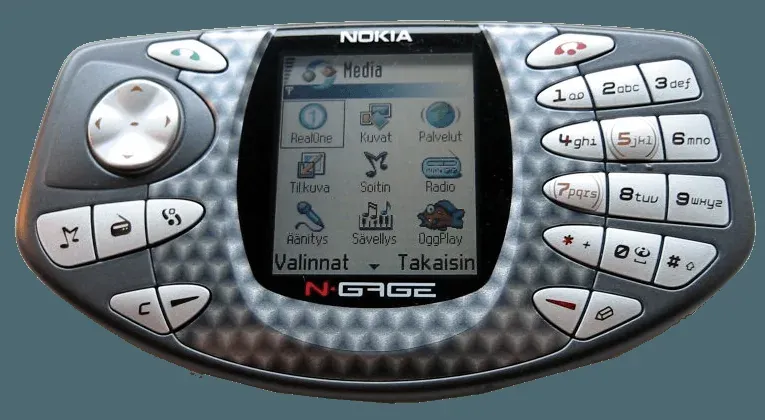

2003 年发布
Nokia N-Gage
游戏手机先驱 · 横向持握 · 蓝牙联机
约300万
系列总销量
104MHz
ARM CPU
2.1寸
屏幕尺寸
$299
首发价格(美元)
📖 历史与背景
2003年10月7日，诺基亚发布N-Gage——这是一次大胆的尝试：将手机和掌机合二为一。诺基亚希望用N-Gage挑战任天堂在掌机市场的统治地位，同时拓展手机的游戏功能。
N-Gage采用了横向持握设计，数字键盘分布在屏幕两侧，类似Game Boy的布局。它支持GSM/GPRS网络通信和蓝牙——这是首款支持蓝牙联机的掌机，玩家可以无线对战。同时它还是一台完整的Symbian智能手机，可以打电话、发短信、上网。
然而N-Gage的设计存在严重问题：换游戏需要拆开后盖取出电池才能更换MMC卡，被玩家嘲笑为「侧着说话的玉米饼」（taco phone）；打电话时需要侧着拿手机，屏幕窄边朝上，非常尴尬；游戏阵容薄弱，且大部分是其他平台的移植作品。
⚙️ 硬件规格
CPU
ARM925T 104MHz
系统
Symbian OS 6.1 (Series 60)
屏幕
2.1寸 176×208 TFT背光
色数
同屏4096色
通信
GSM/GPRS + 蓝牙
存储
MMC卡扩展
电池
内置锂电池（游戏3-6小时）
重量
约137g
🎮 经典游戏阵容
Pathway to Glory
2004 · 战棋
二战背景战术游戏，蓝牙联机
Ashen
2004 · FPS
掌机FPS早期尝试
Tomb Raider
2003 · 动作冒险
劳拉掌机版
Pandemonium
2003 · 动作
2.5D横版动作
SonicN
2003 · 动作
索尼克掌机版
Marcel Desailly Football
2003 · 体育
足球游戏
Operation Shadow
2004 · 动作
俯视角射击
Pocket Kingdom
2005 · MMORPG
掌机网游先驱
🏆 市场表现与影响
- 系列总销量：N-Gage（2003）+ N-Gage QD（2004改版）合计约300万台，远低于诺基亚的预期目标
- N-Gage QD改版：2004年诺基亚推出了改进版N-Gage QD——缩小体积、改为底部插卡（不用拆后盖）、降低价格，但已无力回天
- 失败原因：设计反人类（换卡需拆机）、打电话姿势尴尬、游戏阵容薄弱、价格偏高（299美元）、电池续航差
- N-Gage平台转型：2005年诺基亚将N-Gage从硬件转为软件平台——N-Gage应用可在多款诺基亚N系列手机上运行，但2009年正式关闭
- 历史意义：虽然商业失败，但N-Gage开创了「手机游戏」的概念，比iPhone App Store早了5年，是移动游戏发展的先驱
💡 趣闻与冷知识
- N-Gage被美国《PC World》杂志评为「史上最丑25款科技产品」之一——「taco phone」的外号广为流传
- N-Gage首发时诺基亚投入了巨额营销费用——包括在伦敦和巴黎举办大型发布会，但效果远不如预期
- N-Gage是首款内置蓝牙的掌机——比PSP的Ad-hoc模式和Nintendo DS的Wi-Fi都早
- N-Gage的MMC卡游戏容量仅8-64MB——大部分游戏是其他平台的缩水移植版，缺乏独占大作
- 2004年N-Gage QD改版后，诺基亚放弃了「手机+掌机」的模糊定位，改为更纯粹的游戏设备——但已经错过了市场窗口